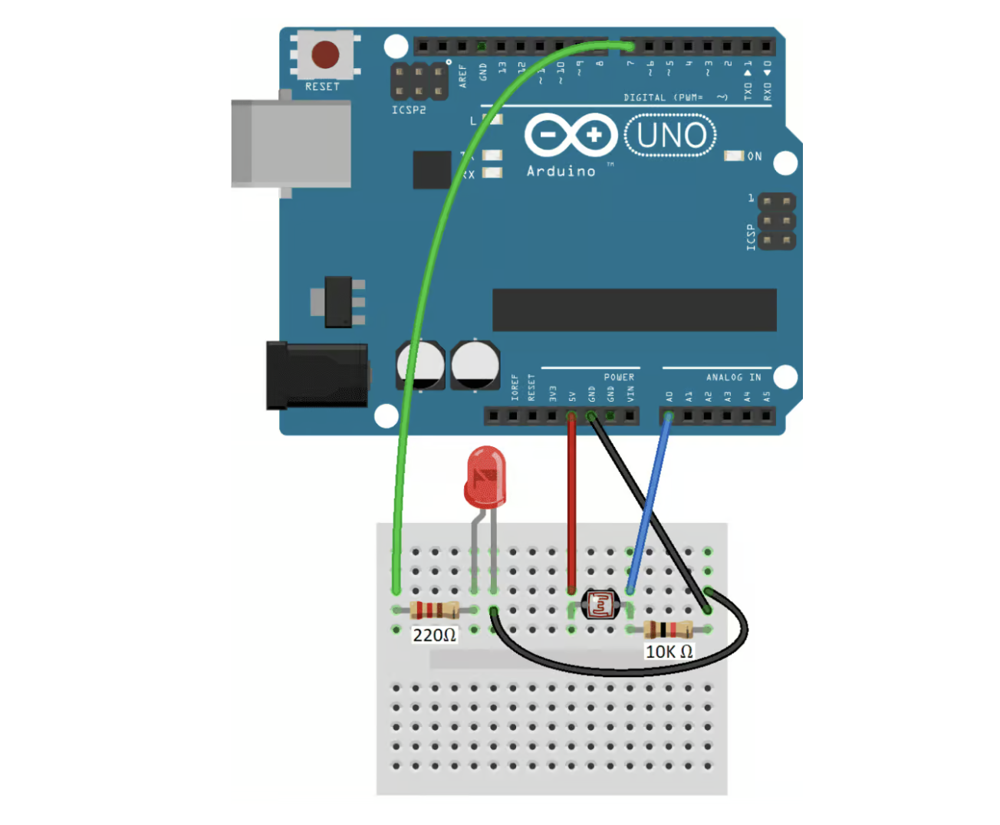
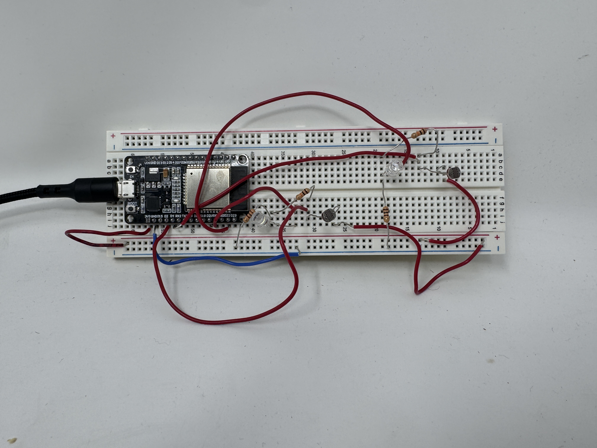
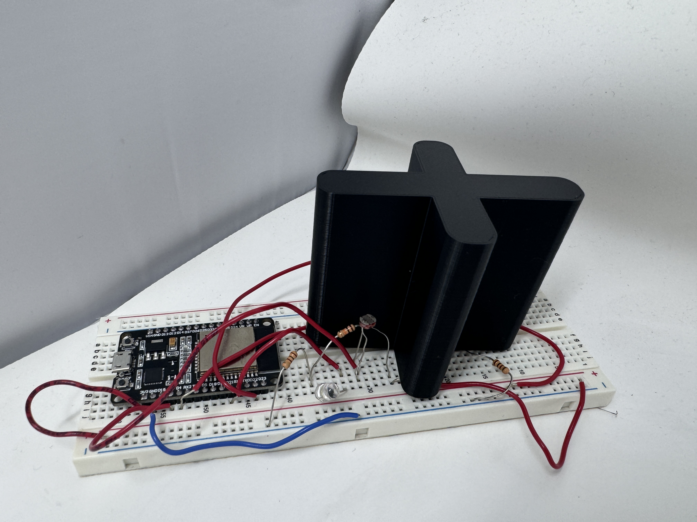
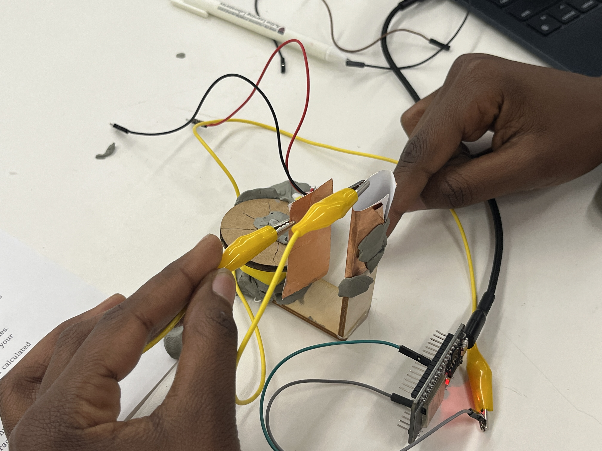

<<div class="textcontainer">
<p class="margin"> </p>
<h2>Week 6: Electronic Input</h2>
<h4>Photoresistor and LEDs</h4>
<p class="margin">
This week's assignment was to design a circuit using a sensor, and possibly an electronic output. Because my final project has an aspect of being able to check brighter sides (side) of the robot and moving to face them, I decided I could use a photoresistor to be able to get familiar on how to integrate them in circuits. For the purpose of this homework and the size of the breadboards, I used two photoresistors, each paired with an LED. The way it works, two photoresistors exist on the same circuit, but depending on what photoresistor receives more light, the LED lights up. The LED lights up in the area with the least light. How it connects to my project is through the checking of the brightness level on photoresistors. This is the foundation of the circuit (found on the web).
</p>
<div>
<p></p>
</div>
<p class="margin">
So, for my circuit to imbed the aspect of comparison, I combined two photoresistors in parallel. The way it works, I am constantly checking the brightest part of the room. Intuitevly, we can already infer that the photoresistors are spearated, and this is how I 3D printed a wall so that the separation are clear (the same way the robot would have a body that separates the sides and how much brightness is on each side). This is what the circuit looks like.<br>
<div>
<p></p>
</div>
<br>
<div>
And this is the circuit with the wall idea
<p></p>
</div>
<br>
</p>
<p>Below is how i tested (or here is a demo) of how the photoresistors sense and how the output looks like: The LED lights where it is the least bright. Going in the future, I hope instead of an LED, I could have a motor that then rotates. Because I want to rotate and face the face that is brightest, I would rotate until the reading on the front photoresistor is the lowest/brigthest (depending on what the reading is supposed to convey). This will allow the intended functionality.</p>
<<video width="640" height="360" controls autoplay muted loop>
<source src="vid.mp4" type="video/mp4">
I hope your browser supports the video tag.
</video>
Finally, here is the code I used for this
<pre><code>
// constants won't change
#define LIGHT_SENSOR_PIN1 2// ESP32 pin GPIO36 (ADC0) connected to light sensor
#define LIGHT_SENSOR_PIN2 4
#define LED_PIN1 21 // ESP32 pin GPIO22 connected to LED
#define LED_PIN2 22 // ESP32 pin GPIO22 connected to LED
void setup() {
Serial.begin(9600);
// set the ADC attenuation to 11 dB (up to ~3.3V input)
analogSetAttenuation(ADC_11db);
pinMode(LED_PIN1, OUTPUT); // set ESP32 pin to output mode
pinMode(LED_PIN2, OUTPUT);
digitalWrite(LED_PIN2, LOW);
digitalWrite (LED_PIN1, LOW);
}
void loop() {
int led1 = analogRead(LIGHT_SENSOR_PIN1);
int led2 = analogRead(LIGHT_SENSOR_PIN2);
Serial.print("led 2: ");
Serial.println(led2);
Serial.print("led 1: ");
Serial.println(led1);
if (led1 > led2 ){
digitalWrite(LED_PIN2, HIGH); // turn on LED
digitalWrite(LED_PIN1, LOW);
}
else if ( led2 > led1 ){
digitalWrite(LED_PIN1, HIGH);
digitalWrite(LED_PIN2, LOW);
}
else{
digitalWrite(LED_PIN2, LOW);
digitalWrite (LED_PIN1, LOW);
Serial.println("equal");
}
}
</code></pre>
<br>
<h4>Capacitive Sensor</h4>
<p class = "margin">For this part, me an my team worked on a rotating surfaces capacitor. The goal was to see how the capacitance varied as the plates rotated. To achieve this, we decided on one static plate and one rotating plate. We fixed an axis of rotation but allowed the plate to rotate at constant radius around that axis. Because it was challenging to rotate the plate using the motor due to the timeline of the group work, we manually moved the dynamic plate. We made notes of each position, and mainly worked with common angles (0, 45, 90, 135,....). <br>
Here is a picture of our setting.</p>
<div>
<p></p>
</div>
<p class = "margin">To read the data, we used the code that was provided on the course website: at <a href="https://nathanmelenbrink.github.io/lab/input/capacitance/capacitance.txt">Capacitive Sensor Code</a> </p>
<p class = "margin"> These are the readings from the Serial Monitor: </p>
</div>